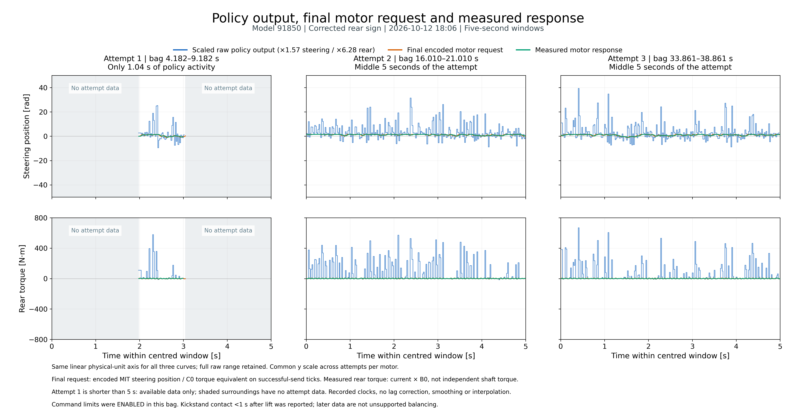

Attempt columns 1–3; steering radians on the top row, rear N·m on the bottom row. Blue: scaled raw policy output. Orange: final encoded request. Green: measured response.
PNG · SVG · PDF · Data definitions · Provenance
Attempt 1 has only 1.04 s of policy activity: surrounding time is blank, not fabricated. All curves share a linear physical-unit axis; full raw range is retained. Rear feedback torque is current × B0, not independently measured shaft torque. Command limits were enabled; early kickstand contact was reported.
